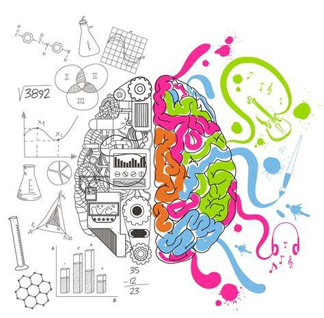
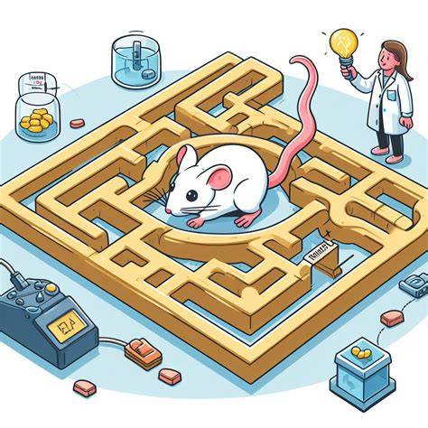

Enfoques Teóricos
Distintas escuelas de pensamiento han marcado el desarrollo de la psicología como disciplina científica. Cada enfoque ofrece una perspectiva única sobre el comportamiento humano.
| Corriente | Enfoque Principal | Método | Representantes |
|---|---|---|---|
| Psicoanálisis | Inconsciente, conflictos internos | Asociación libre, interpretación | Freud, Jung, Adler |
| Conductismo | Comportamiento observable | Condicionamiento, observación | Watson, Skinner, Pavlov |
| Humanismo | Potencial humano, autorrealización | Terapia centrada en el cliente | Rogers, Maslow |
| Cognitivismo | Procesos mentales | Experimentos, modelado | Piaget, Beck, Bandura |

Psicoanálisis
Fundado por Freud, enfatiza el inconsciente, los impulsos y los conflictos internos como determinantes del comportamiento.

Conductismo
Centrado en el comportamiento observable, con figuras como Watson y Skinner. Estudia el aprendizaje mediante condicionamiento.
Humanismo
Representado por Maslow y Rogers, enfatiza el potencial humano, la libre voluntad y la autorrealización.

Cognitivismo
Estudia procesos mentales como percepción, memoria y pensamiento. Figuras clave: Piaget, Beck.